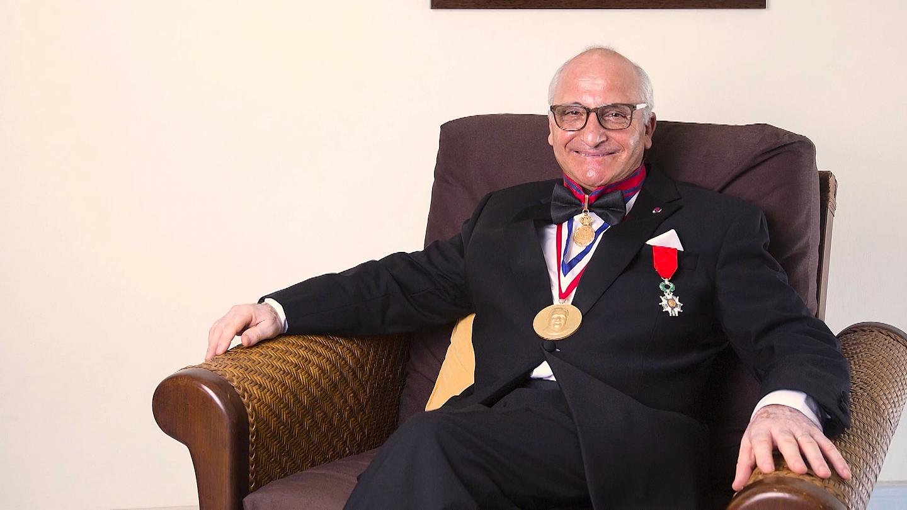

Moroccan scientist, Professor Rachid Yazami’s passion for science started as a child, in his native
Fez, with a
fascination for geology.
His academic ambitions soon leapfrogged from analysing rocks to acquiring a doctorate in Grenoble,
France.
In 1980, aged 26, he made a key discovery that led to the development of the lithium-graphite anode,
which is commonly
used in commercial rechargeable batteries found in mobile phones and laptops.
“I still remember the day I opened my battery and I saw that graphite - my anode - had become a gold
colour. And I said,
‘it’s alchemistry, I converted a graphite into gold’,” he told Inspire Middle East’s Rebecca
McLaughlin-Duane. “My
professors realized that actually this was a turning point in battery history, that we could now
store lithium into
graphite, and it was safe.”
Despite the scientific breakthrough, it took the wider industry more than a decade to commercialise
the lithium ion
battery. Today, Yazami estimates that around 95 per cent of batteries produced globally use his
anode.
Worldwide, the commercial lithium ion battery market is estimated by some analysts to be worth in
excess of $80 billion.
Due to circumstances at the time of his discovery, however, Yazami saw little financial reward for
his invention.
“I am just a poor scientist, because for some reason, the French government at that time didn't
consider the invention
of graphite as a major invention,” he says. “So, they denied my patent application. So, we didn't
file a patent, which
means that the Japanese companies could use my invention for free.”
The renowned Moroccan engineer and scientist stated at the virtual event that he has offered his
latest invention to Morocco as he sees it as a key technology to create jobs. Rachid Yazami also
hopes to provide inspiration for young Moroccans to explore and innovate.
The battery technology would charge electric devices, such as electric cars, up to three times as
fast and is likely to earn the attention of major international players such as car manufacturer
Tesla. Yazami sees such promise in the technology that he estimates it could allow Morocco to exceed
the success of Tesla, Elon Musk’s company worth $400 billion.
However, Yazami’s offer comes with a set time limit. He urges Moroccan authorities to invest in and
implement it soon to make Morocco a powerhouse in battery technology. The inventor expressed
frustration with ever-present “obstacles” in Morocco, and gave officials until the end of the year
to make serious progress.
Rachid Yazami
The man who powered the new world
